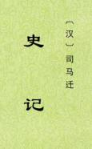

|
史记，历史上第一部纪传体通史，包括12本纪10表8书30世家70列传。记载自上古传说中的黄帝时代，至汉武帝太初四年间共3000多年的历史。汉武帝太初元年（前104年），司马迁开始创作，前后经历了14年完成。《史记》最初没有固定的名字，或称《太史公书》。司马迁死后，才渐渐传出。 司马迁外孙杨恽汉宣帝时封平通侯，在其宣扬下，《史记》才广泛传播开来。但在最初流传的时候，就有缺失，《汉书·司马迁传》称“十篇缺，有录无书”。有部分是汉元帝时的博士褚少孙所补，所以今本中有“褚先生曰”。 【此精校本，尽量删除他人增补及论赞。十表表格从略，请参看《全本》。（2019/5/21）】 |
 |